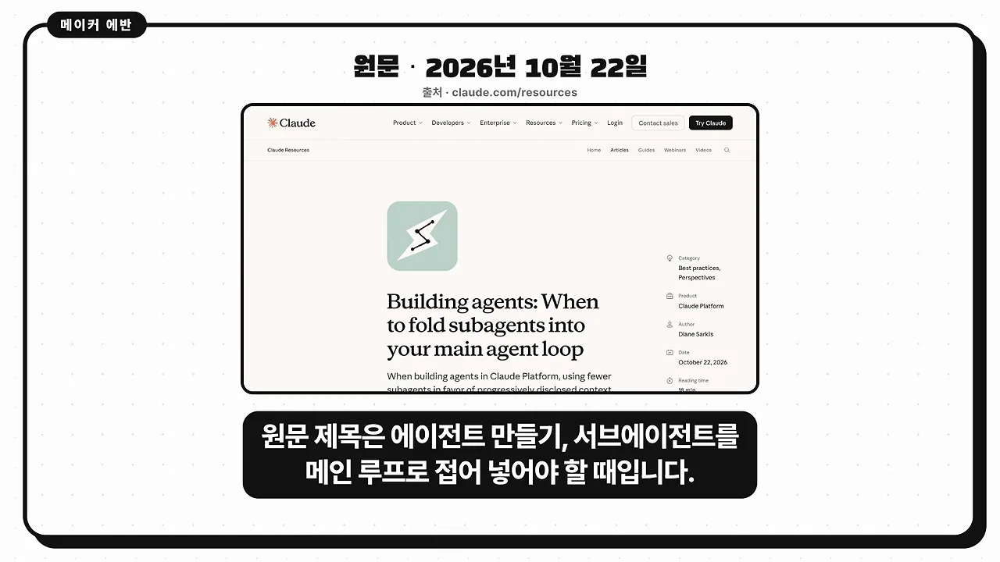
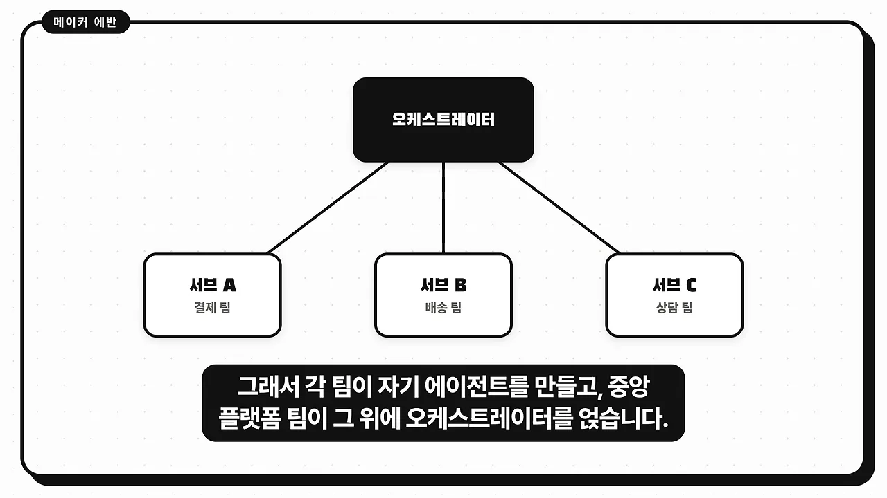
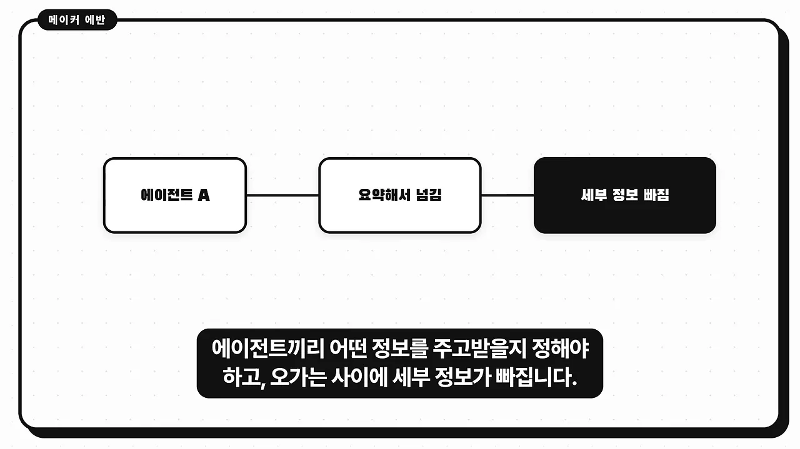
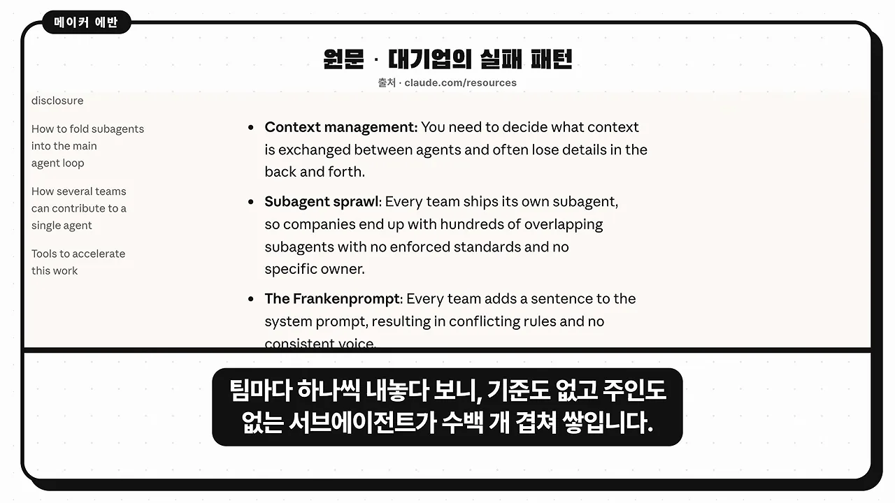
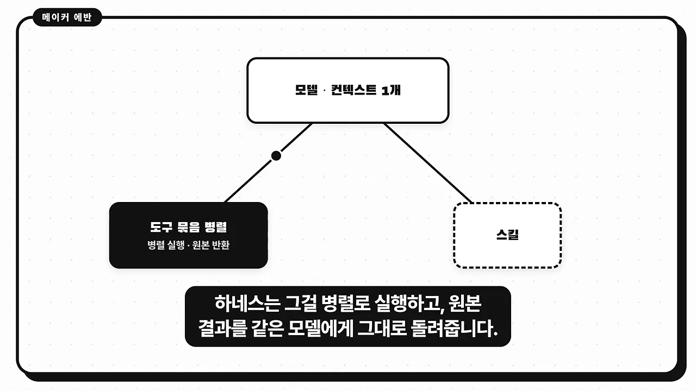
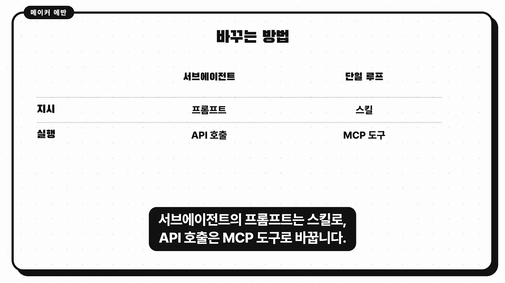
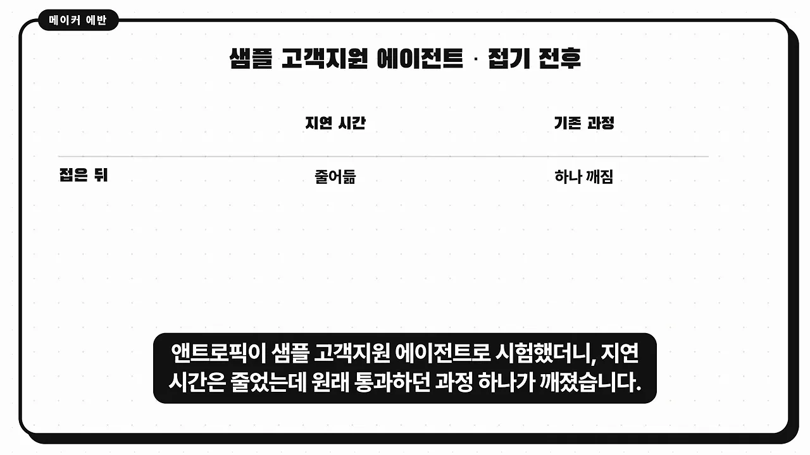
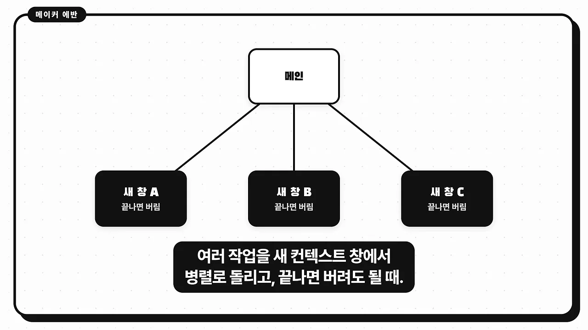
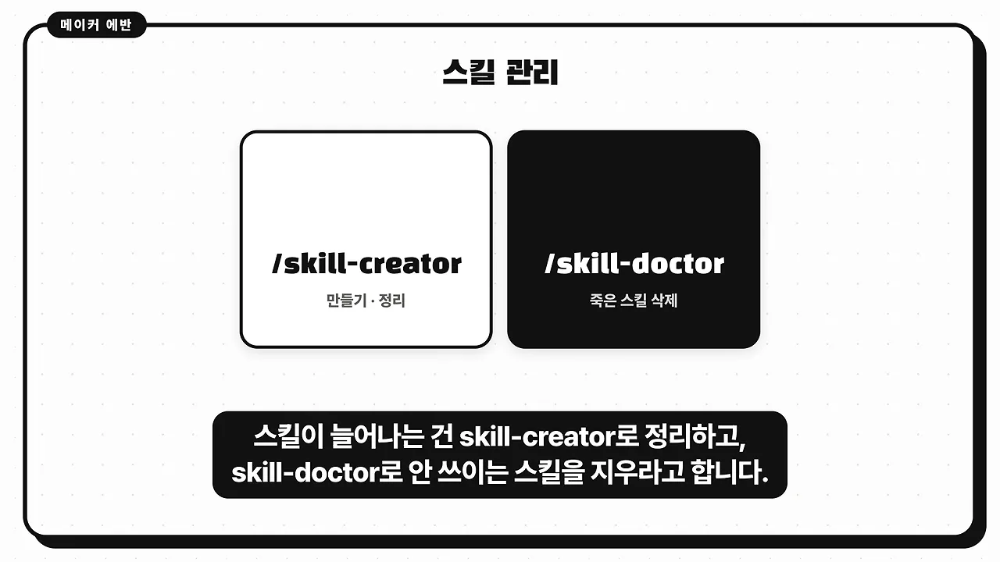
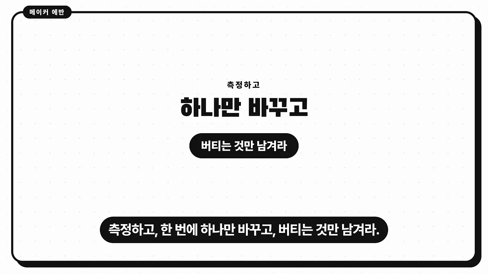

서브에이전트를 메인 루프로 접어 넣으라는 글
요즘 에이전트를 만들 때 서브에이전트를 여러 개 두는 구조를 많이 써요. 그런데 앤트로픽이 정반대 방향의 글을 냈어요. 서브에이전트를 메인 에이전트 루프 안으로 접어 넣으라는 내용이에요. 영상은 이 글을 처음부터 끝까지 풀어 줘요.
근거로 든 숫자는 두 가지예요. 한 고객은 멀티 에이전트 구조를 단일 에이전트 루프와 비교했더니 실행 시간이 약 2배 빨라졌어요. 속도만이 아니에요. 아래 슬라이드처럼 여러 기업 배포를 비교하면 '프롬프트 하나'는 품질이 낮고, '서브에이전트'는 중간이고, '단일 + 스킬'이 자주 최고였어요. 비용과 지연 시간도 대체로 더 낮았고요.

원문 제목은 「Building agents: When to fold subagents into your main agent loop」예요. 2026년 10월 22일에 올라온 Claude Platform 카테고리 글이에요. 화면에는 claude.com의 원문 페이지가 그대로 나와요.

용어부터 맞춰요
서브에이전트는 자기만의 컨텍스트 창, 자기만의 도구, 자기만의 지시문을 가진 에이전트예요. 그 위에서 코디네이터, 곧 오케스트레이터가 서브에이전트들을 불러 결과를 모아요.
앤트로픽도 서브에이전트를 버리라고 하지 않아요. 검증, 병렬 작업, 권한을 모듈별로 나누는 데는 효과적이라고 분명히 적었어요. 자사 멀티 에이전트 리서치 시스템도 이 구조예요. 다만 Applied AI(Artificial Intelligence) 팀이 기업 배포를 보다가 패턴 하나를 찾았어요. 라우터, 플래너, 도메인별 서브에이전트를 메인 루프로 합쳤더니 결과가 좋아지는 경우가 계속 나왔다는 거예요.
조직도가 그대로 에이전트가 될 때
기업이 내놓는 에이전트 설계는 대개 같은 순서로 쌓여요. 맨 앞에 의도 분류기, 그다음 고정된 다단계 추론 파이프라인, 사용자 세그먼트별 분기와 추천 분기, 맨 위에 멀티 에이전트 오케스트레이터예요.
앤트로픽의 피드백은 이랬어요. 이 구조 대부분은 이제 모델이 굳이 대신 해 줄 필요가 없는 일을 하고 있다는 거예요. 명확한 시스템 프롬프트 하나, 얇은 데이터 도구 4~5개, 확실한 출력 가드레일이면 대부분의 경우를 덮어요.
실제 사례도 있어요. 어떤 회사는 고객용 에이전트 안에 전문 서브에이전트를 12개쯤 뒀어요. 그랬더니 브랜드 톤을 일관되게 지키기 어려웠고, 지연 시간이 늘어 사용자 경험이 나빠졌어요.
조직도가 그대로 에이전트가 돼요
왜 이런 구조가 생길까요. 앤트로픽은 콘웨이의 법칙을 꺼내요. 기업은 기능마다 담당 팀이 따로 있어요. 그래서 팀마다 자기 에이전트를 만들고, 중앙 플랫폼 팀이 그 위에 오케스트레이터를 얹어요. 슬라이드의 서브 A·B·C 아래 적힌 결제 팀, 배송 팀, 상담 팀이 바로 그 조직도예요.

이 구조에서는 다섯 가지 문제가 바로 생겨요. 첫째인 컨텍스트 관리는 아래 슬라이드 한 줄로 보여요. 에이전트 A가 결과를 요약해서 넘기면, 그 사이에 세부 정보가 빠져요.

| 문제 | 무슨 일이 생기나요 |
|---|---|
| 컨텍스트 관리 | 에이전트끼리 주고받을 정보를 정해야 하고, 오가는 사이에 세부 정보가 빠져요 |
| 서브에이전트 난립 | 팀마다 하나씩 내놓아 기준도 주인도 없는 서브에이전트가 수백 개 겹쳐 쌓여요 |
| 프랑켄프롬프트 | 팀마다 시스템 프롬프트에 한 문장씩 넣어 규칙이 충돌하고 말투가 흔들려요 |
| 검증 안 된 평가 세트 | 팀마다 자기 하위 작업에만 맞춘 평가를 넣고, 전체를 관리하는 사람이 없어요 |
| 지연 시간 | 구조가 복잡해져 느려져요. 앞의 약 2배 차이가 여기서 나온 숫자예요 |
영상은 이 대목에서 원문 영어 문장을 그대로 띄워요. Context management, Subagent sprawl, The Frankenprompt 세 항목이 위 표의 첫 세 줄이에요.

단일 루프는 어떻게 생겼나요
대안은 점진적 공개예요. 에이전트는 처음에 스킬과 도구의 짧은 설명만 봐요. 실제로 필요해지는 순간에만 전체 내용을 불러와요. 스킬은 스킬 방식으로, 도구는 툴 서치로 불러와요. 앤트로픽은 이게 맞는 이유를 세 가지로 정리했어요.
- 컨텍스트를 공유하면 답이 좋아져요. 앞 단계 결과를 전부 본 에이전트는 그걸 서로 연결할 수 있어요. 서브에이전트가 요약해 넘긴 결과 여러 개를 받는 것보다 훨씬 풍부한 답이 나와요.
- 점진적 공개가 컨텍스트 비대를 막아요. 팀들이 서브에이전트로 쪼갰던 가장 큰 이유는 시스템 프롬프트가 너무 길어지는 문제였어요. 앤트로픽은 상위 모델용 Claude Code 시스템 프롬프트를 80% 넘게 줄였다고 밝혔어요.
- 모델이 좋아졌어요. Opus 4.5부터 모델이 한 루프에서 감당하는 양이 예상보다 훨씬 커졌어요. 최근 모델은 스스로 진행 상황을 말하고 작업을 검증하면서 가니까, 하네스 일부가 필요 없어졌어요.
목표로 하는 구조
모델 하나, 컨텍스트 창 하나가 열린 도구 루프를 돌려요. 슬라이드에서 위의 '모델 · 컨텍스트 1개' 아래로 '도구 묶음 병렬'과 점선의 '스킬'이 달려 있어요. 도구 묶음 칸의 작은 글씨 '병렬 실행 · 원본 반환'이 이 구조의 핵심이에요.

영상은 이 루프를 여러 슬라이드에 나눠 설명해요. 한 바퀴를 한 그림에 모으면 이래요. 매 턴 모델이 도구 호출을 묶음으로 내요. 하네스는 그걸 병렬로 실행하고 원본 결과를 그대로 돌려줘요. 모델은 다음 묶음을 낼지, 사용자에게 질문할지, 답할지를 직접 골라요. 턴 수 예산, 비용 예산, 쓰기 승인 같은 제한은 하네스에서 걸어요.
서브에이전트가 하던 일은 어디로 가나요
| 하던 일 | 옮길 곳 |
|---|---|
| 순서, 업무 절차 | 스킬 |
| 검증, 승인 게이트 같은 강한 제한 | 도구 안 |
| 대화 중간에 필요한 메모리 조회 | 도구 |
| 싸고 거의 항상 필요한 것 (예: 엔티티 식별) | 코드에 남겨도 돼요 |
| 요청 페이로드 만들기, 스트림 파싱 같은 기계적인 부분 | 코드에 남겨도 돼요 |
| 정책, 제품 사양 같은 참고 자료 | 검색 도구 뒤, 또는 스킬 안 참고 파일 |
도구는 사용자 의도 단위로 묶으라고 권해요. API(Application Programming Interface) 하나에 도구 하나씩 만들면 금방 많아지는데, 시스템 프롬프트에 도구 정의가 30~50개를 넘으면 도구 선택이 나빠져요. 권한도 도구 안에서 처리해요. 도구가 호출한 사용자의 권한을 확인하고, 안 되면 모델이 읽을 수 있는 거절 문장을 돌려줘요. 그러면 권한 등급마다 에이전트를 따로 만들 필요가 없어요. 코드가 참고 자료를 미리 찾아 프롬프트에 붙여 넣는 방식은 피하라고 했어요.
옮기는 순서: 평가부터, 하나씩
실제로 옮기는 첫 단계는 평가 세트예요. 중앙 팀이 전체 흐름을 보는 공통 평가 세트를 갖고, 각 팀은 자기 스킬과 함께 작은 평가 세트를 내요. 시작은 정답 예시 10개면 충분해요.
무엇을 재는지는 단계마다 달라요. 오케스트레이터가 있는 동안은 라우팅 정확도, 곧 맞는 서브에이전트를 골랐는지를 봐요. 서브에이전트를 접어 넣은 뒤에는 맞는 스킬을 불렀는지, 맞는 도구를 호출했는지를 봐요. 최종 목표는 작업 완료 평가예요. 구조끼리 비교할 때 가장 중요한 숫자가 이거라서요.
옮기는 방법 세 가지
| 방법 | 어떻게 | 좋은 점과 남는 문제 |
|---|---|---|
| 도메인 에이전트 합치기 | 서로 출력을 이어 받거나, 같은 데이터를 건드리거나, 자주 같이 불리는 전문 에이전트부터 합쳐요 | 강하게 묶인 짝부터 줄어요 |
| 서브에이전트를 도구처럼 부르기 | 메인 에이전트가 대화를 계속 쥐고, 서브에이전트는 도구로 호출해요 | 다시 짤 필요가 없어 첫걸음으로 좋고 비교 기준점이 생겨요. 요약 손실과 중첩 루프의 지연은 남아요 |
| 스킬과 도구로 바꾸기 | 서브에이전트의 프롬프트는 스킬로, API 호출은 MCP(Model Context Protocol) 도구로 바꿔요 | 한 번에 하나씩 바꾸고 전후를 평가로 비교해요 |
세 번째 방법은 슬라이드 한 장에 정리돼 있어요. 서브에이전트 열의 '프롬프트'와 'API 호출'이 단일 루프 열에서 각각 '스킬'과 'MCP 도구'로 바뀌어요.

평균만 보면 놓치는 함정
앤트로픽이 샘플 고객지원 에이전트로 시험했더니 표처럼 결과가 갈렸어요. 접은 뒤 지연 시간은 줄었는데, 원래 통과하던 과정 하나가 깨졌어요. 메인 에이전트가 주문 조회 도구를 쥐고 혼자 답해 버리면서, 배송 담당에게 도착 날짜를 묻지 않았거든요.

게다가 이 오류는 2번 돌려서 1번만 나왔어요. 그래서 평균 점수 말고 어떤 과제가 뒤집혔는지 봐야 하고, 과제마다 여러 번 돌려야 해요.
그래도 서브에이전트가 맞는 자리
여기까지 들으면 서브에이전트는 다 지워야 할 것 같지만, 원문은 그렇게 말하지 않아요. 서브에이전트를 써야 하는 조건을 세 가지로 적었어요.
- 단일 루프가 컨텍스트 비대 때문에 성능이 측정 가능하게 떨어질 때
- 여러 작업을 새 컨텍스트 창에서 병렬로 돌리고, 끝나면 버려도 될 때
- 단일 에이전트가 도구를 잘 못 고르거나, 시스템 프롬프트 안 지시가 서로 충돌할 때
두 번째 조건을 그린 슬라이드예요. 메인 아래 새 창 A·B·C가 달려 있고, 칸마다 '끝나면 버림'이라고 적혀 있어요.

나눌 거라면 문제 유형이 아니라 컨텍스트 기준으로 나누라고 해요. 나머지 시스템에서 받을 게 거의 없는 일을 맡기고, 짧은 결과만 돌려받으라는 거예요. 독립적인 조사 경로, 깔끔하게 분리된 컴포넌트, 블랙박스 검증이 좋은 예예요. 문제 유형별로 나누면 정보가 넘어갈 때마다 조금씩 틀어지는 '전화 게임'이 된다고 해요.
약 2배라는 숫자는 한 고객의 결과라는 점도 기억해야 해요. 단일 루프도 공짜는 아니에요. 시스템 프롬프트를 계속 관리하고, 스킬과 도구 설명이 제때 걸리게 다듬어야 해요. 그래서 중앙 팀 하나가 시스템 프롬프트와 전체 품질을 책임지고, 새 도구와 평가를 미리 검토하라고 해요.
Claude Code에서는
원문은 Claude Platform으로 에이전트를 만드는 기업 기준이에요. 화자는 Claude Code 사용자에게도 그대로 해당한다고 봐요. 리뷰 담당, 테스트 담당, 문서 담당처럼 역할마다 서브에이전트를 만들고 싶어지는데, 그게 바로 원문이 말한 문제 유형별 분할이에요.
리뷰어 서브에이전트는 메인 대화에서 무엇을 왜 바꿨는지 모른 채 요약만 받고 일해요. 같은 내용을 스킬로 만들면 메인 에이전트가 지금까지의 맥락을 다 든 채 그 절차를 따라요. 스킬은 평소 이름과 짧은 설명만 컨텍스트에 올라가 있다가 필요할 때 본문을 불러와요. 그래서 스킬이 수십 개여도 컨텍스트가 바로 차지 않아요.
서브에이전트가 빛나는 자리는 따로 있어요. 큰 저장소에서 파일 수백 개를 훑는 탐색처럼 결과만 짧게 받으면 되는 일, 여러 갈래를 동시에 조사하는 일이에요. 그 과정의 로그는 메인 컨텍스트에 남길 필요가 없으니까요. 화자는 기준을 표 하나로 정리해요. 메인 맥락이 필요하면 스킬, 필요 없으면 서브에이전트예요. 돌려받는 것도 과정 전체와 결과만으로 갈려요.

함께 공개된 도구
앤트로픽은 이 작업을 돕는 Claude API 스킬도 같이 공개했어요.
| 스킬 | 하는 일 |
|---|---|
build-eval | 첫 공통 평가 세트를 만들어 줘요 |
prompt-audit | 예전 모델 때문에 넣은 지시를 찾아 수정안을 보여 줘요 |
hillclimb | 평가 세트를 기준으로 스킬과 도구 설명을 반복해서 개선해요 |
cost-optimize | 호출 비용이 어디서 나가는지 보고, 한 번에 하나씩 절감안을 내요 |
스킬이 늘어나면 정리 도구도 필요해요. 슬라이드의 흰 카드 /skill-creator는 '만들기·정리', 검은 카드 /skill-doctor는 '죽은 스킬 삭제'예요.

정리하면 이래요. 서브에이전트를 조직도대로 나누면 컨텍스트가 새고, 프롬프트가 충돌하고, 느려져요. 대안은 메인 에이전트 하나에 스킬과 도구를 점진적으로 붙이는 단일 루프예요. 옮길 때는 평가 세트부터 만들고, 하나씩 접어 넣고, 뒤집힌 과제를 확인해요. 접어 넣은 쪽이 더 나쁠 때만 서브에이전트로 남겨요. 마지막 슬라이드는 원문의 끝 문장이에요.
